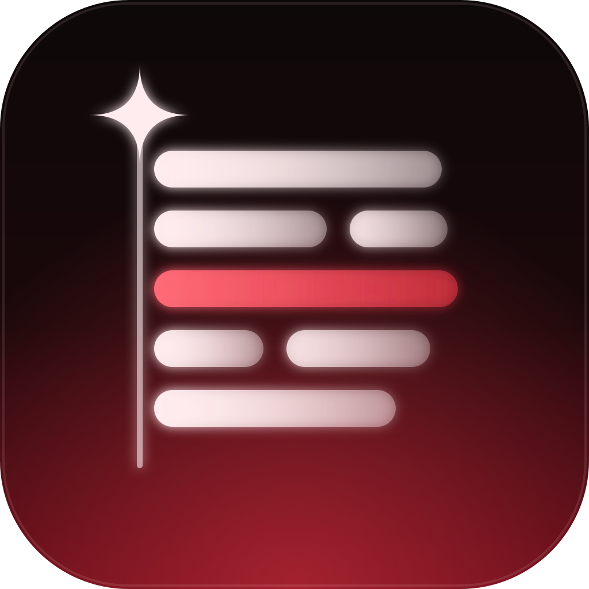

01 / 04
Chaque stem est reconnu au nom, ou à l'écoute : son type, sa couleur et son bus suivent. Le type se corrige d'un clic.
02 / 04
Ce qui nomme le projet et remplit ses infos dans le DAW. Tempo et tonalité sont mesurés sur toutes les pistes jouées ensemble.
03 / 04
Le logiciel où le projet s'ouvre, et la template dont il reprend pistes, bus et réglages.
Template
04 / 04
Le dossier du client, un dernier coup d'œil, et le projet est créé avec ses pistes renommées, ses bus et ses couleurs.
Dossier des clients
Client